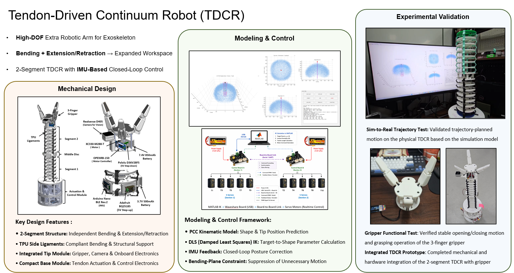

Two-Segment Structure
The robot is divided into two continuum segments, allowing independent bending and extension/retraction of each section.
Independent Segment Motion
FEATURED RESEARCH · CONTINUUM ROBOTICS
A two-segment tendon-driven continuum robot designed for independent bending and extension/retraction, with integrated sensing, closed-loop control, vision, and robotic grasping capability.
PROJECT FOCUS
Mechanical Design
Modeling & Control
Experimental Validation

OVERVIEW
Mechanical design, modeling and control, and experimental validation of the two-segment TDCR platform.
MECHANICAL SYSTEM
Mechanical architecture for independent bending and extension/retraction while maintaining structural support and integrating sensing and grasping hardware.
The TDCR consists of two independently actuated continuum segments designed to provide both bending and extension/retraction. This configuration expands the reachable workspace compared with a bending-only continuum structure.
The robot is divided into two continuum segments, allowing independent bending and extension/retraction of each section.
Flexible TPU ligaments provide compliant bending while supporting the structure against undesired deformation during motion.
The distal module integrates a three-finger gripper, Intel RealSense D405, motor controller, battery, and onboard electronics for manipulation and vision.
Tendon actuation and control electronics are integrated into the base module, providing a compact platform for multi-tendon control.
KINEMATICS · CONTROL
Kinematic modeling and closed-loop control framework for target tracking and posture correction of the continuum robot.
Desired end-effector position
Target-to-shape parameter calculation
Tendon-driven actuation
Closed-loop posture correction
A Piecewise Constant Curvature model is used to represent the continuum robot configuration and predict its shape and tip position.
Damped Least-Squares inverse kinematics calculates robot shape parameters required to move the end-effector toward a desired target position.
IMU orientation measurements are used to compare the desired and actual segment posture and provide closed-loop posture correction.
Motion outside the desired bending plane is suppressed to reduce unnecessary movement and improve trajectory accuracy.
EXPERIMENTS · SYSTEM INTEGRATION
Physical validation of trajectory tracking, gripper operation, and complete TDCR hardware integration.
Trajectory-planned motion generated from the simulation framework was executed on the physical TDCR prototype.
The three-finger gripper was tested independently to verify stable opening, closing, and grasping motion.
Mechanical components, gripper, onboard electronics, sensing, and actuation hardware were integrated into the complete two-segment TDCR.
PROJECT OUTCOME
The project demonstrates an integrated continuum robotic platform combining mechanical design, kinematic modeling, closed-loop sensing and control, eye-in-hand vision, and robotic grasping.
HYEONTAE JOO · CONTINUUM ROBOTICS